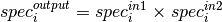
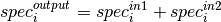

BinaryOperateMasks dialog.
Table of Contents
Performs binary operation, including and, or and xor, on two mask Workspaces, i.e., SpecialWorkspace2D.
| Name | Direction | Type | Default | Description |
|---|---|---|---|---|
| InputWorkspace1 | Input | MaskWorkspace | Mandatory | MaskWorkspace 1 for binary operation |
| InputWorkspace2 | Input | MaskWorkspace | Optional MaskWorkspace 2 for binary operation | |
| OperationType | Input | string | AND | Operator for Workspace1 and Workspace2. Allowed values: [‘AND’, ‘OR’, ‘XOR’, ‘NOT’] |
| OutputWorkspace | Output | MaskWorkspace | Mandatory | Output MaskWorkspace as result of binary operation |
A binary operation will be conducted on two SpecialWorkspace2D (i.e., masking workspace). The binary operations supported include AND, OR and XOR (exclusive or). The operation is done between the corresponding spectra of these two input workspaces, i.e.,



A SpecialWorkspace2D with the same dimension and geometry as the input two SpecialWorkspace2D.
Example - Binary Operation Usage
# Create some masked workspaces
ws1 = CreateSampleWorkspace(NumBanks=1,BankPixelWidth=1)
ws2 = CreateSampleWorkspace(NumBanks=1,BankPixelWidth=1)
MaskDetectors(ws1, WorkspaceIndexList=0)
MaskDetectors(ws2, WorkspaceIndexList=0)
a, list = ExtractMask(ws1)
b, list = ExtractMask(ws2)
# Run using AND
_and = BinaryOperateMasks(a, b, OperationType='AND')
# Run using OR
_or = BinaryOperateMasks(a, b, OperationType='OR')
# Run using XOR
_xor = BinaryOperateMasks(a, b, OperationType='XOR')
print(_and.readY(0))
print(_or.readY(0))
print(_xor.readY(0))
Output:
[ 2.]
[ 1.]
[ 0.]
Categories: AlgorithmIndex | Transforms\Masking
C++ header: BinaryOperateMasks.h (last modified: 2018-10-05)
C++ source: BinaryOperateMasks.cpp (last modified: 2019-06-05)